ODS 14: VIDA SUBMARINA
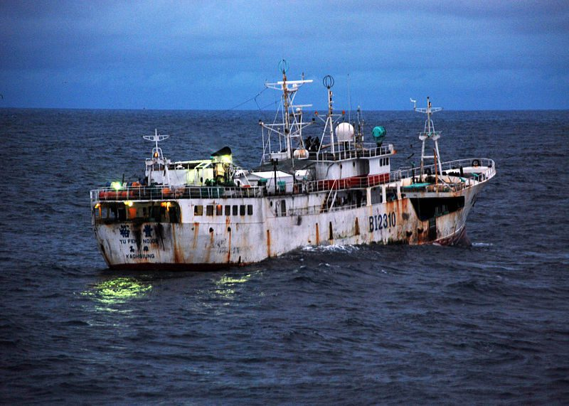
Primera meta: Abordar la Pesca Ilegal
Índice:

¿Qué es la Pesca Ilegal?
La pesca ilegal, no declarada o no reglamentada es cualquier tipo de pesca realizada de manera ilícita o de manera no permitida. Este negocio mueve 23 000 millones de dólares al año y es la tercera actividad ilícita que más dinero mueve, solo después de la venta de armas y el narcotráfico. Incluso el Perú está lleno de este mal que afecta a todos. ¿Sabías que en el Mar Peruano hay más de 600 embarcaciones chinas pescando ilegalmente todos los días?
La pesca ilegal es todo tipo de pesca que incumple las normas establecidas en el lugar donde se está pescando. Algunos ejemplos de este tipo de pesca pueden ser el uso de artes o maneras prohibidas para pescar (métodos de pesca), estos pueden no respetar el ciclo de vida de algunas especies. Pescar encima de una cuota establecida, más de lo acordado con el país que impone las normas, y pescar especies prohibidas tienen las mismas consecuencias. Algunas especies son bien cuidadas al ser consideradas escasas en algunos países, la pesca ilegal hacia ellas por una ganancia superior de dinero puede traer graves problemas. Finalmente, pescar en áreas restringidas como la Reserva Marina de las Galápagos es ilegal, gente buena hace esfuerzos para mantener especies en este tipo de lugares y gente irresponsable las pesca como si fueran a sobrevivir a toda catástrofe. Cada país tiene sus propias normas de pesca.
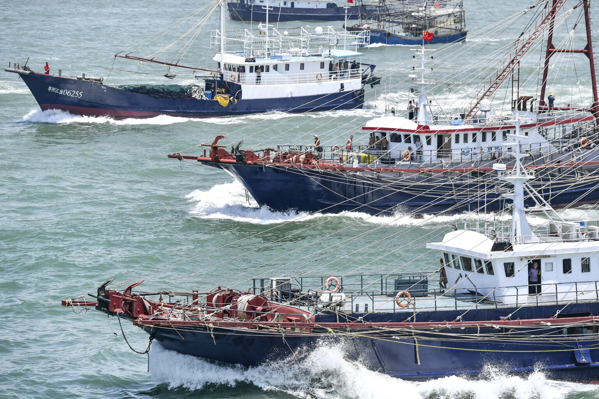
La pesca no declarada consiste en las actividades pesqueras que no han sido reportadas o a los datos inexactos que los pescadores proporcionan a las autoridades de control. Esto generalmente ocurre porque se tiene pagar una tasa o un impuesto por cada tonelada métrica pescada, y al proporcionar datos inexactos evitan pagar algunas de estas multas para sacar más dinero a su trabajo. También, si es que no reportan sus pescas sacan un provecho total y no pagan nada de impuestos. Estos impuestos pueden perjudicar al negocio, sin embargo, perjudican a todos nosotros ya que técnicamente le roban dinero al estado.
La pesca no reglamentada es relacionada con la actividad pesquera que no siguen las normas al pescar ciertas especies. Por ejemplo, en Ecuador no es legal pescar tiburones excepto que su pesca sea accidental, o incidental. La aleta del tiburón puede valer mucho en los mercados asiáticos y es por esto por lo que es una especie bastante cotizada.
El calamar, el tiburón y las rayas son algunas de las especies favoritas de las flotas pesqueras. Por ejemplo, la flota china, considerada la más grande del mundo con cerca de 17.000 barcos, pesca hasta el 70% del calamar del mundo y sus barcos navegan hacia África Occidental y América Latina para satisfacer la demanda de mariscos del país.
La pesca incidental es como una especie de pesca ilegal realizada por accidente, sin embargo, esta también tiene una gran influencia en nuestra sociedad. Si alguien pesca algo incidentalmente esa persona es capaz de afirmar que lo que pescó lo hizo por accidente. Esta alcanza 38.5 millones de toneladas anuales, representa el 40.4% del valor global de la pesca, esta llega a 95.2 millones de toneladas.
¿Cómo nos está afectando?
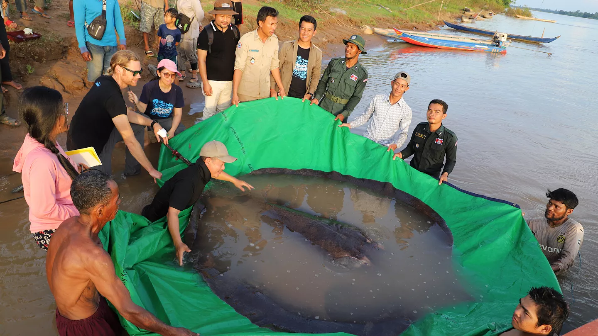
La sobrepesca es la principal causa de la disminución de las poblaciones de tiburones, de acuerdo con el estudio de la FCD. Los científicos estiman que mundialmente las poblaciones de varias especies de tiburones han decrecido un promedio del 90% desde el comienzo de la pesca industrial en las décadas de los 60 y 70. Esto último coincide con el estudio publicado por el Fondo Mundial para la Naturaleza (WWF) que explica que algunas poblaciones de tiburón y rayas han disminuido en más del 95% como resultado de la sobrepesca.
En la actualidad, el 36% de las más de 1.200 especies conocidas de tiburones y rayas se encuentran en peligro de extinción. Sin embargo, la sobrepesca de estos animales no se detiene. Por ese motivo, los tiburones y las rayas están en crisis a nivel mundial. Cada año mueren hasta 100 millones de estos animales en pesquerías de todo tipo, y algunas poblaciones han disminuido en más del 95 %. El comercio mundial de carne de tiburón y raya tiene un valor de 2.600 millones de dólares.
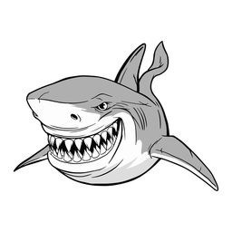
De acuerdo con la Administración Nacional Oceánica y Atmosférica (NOAA), las pérdidas económicas causadas por la pesca incidental alcanzaron los 453 millones de dólares anuales en las pesquerías industriales de Estados Unidos.
Según la Organización de las Naciones Unidas para la Alimentación y la Agricultura (FAO), la pesca ilegal, no declarada y no reglamentada es responsable de la pérdida de 11 a 26 millones de toneladas anuales de pescado, lo que equivale a un valor económico estimado de 10 000 a 23 000 millones de dólares.
 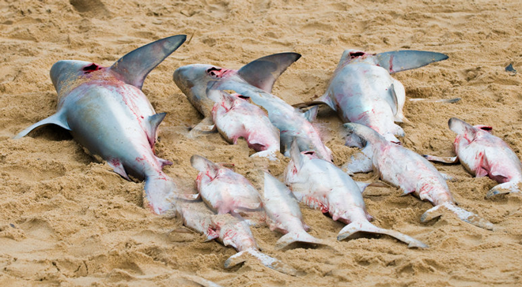
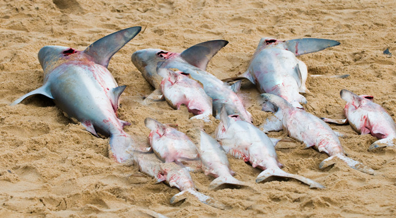
¿Cómo lo podemos solucionar?
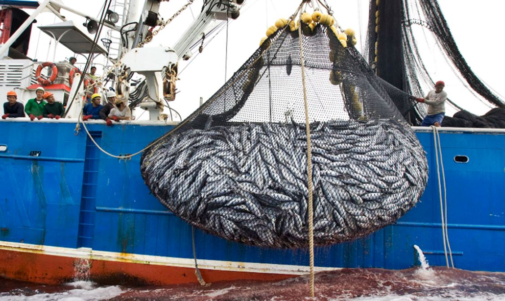
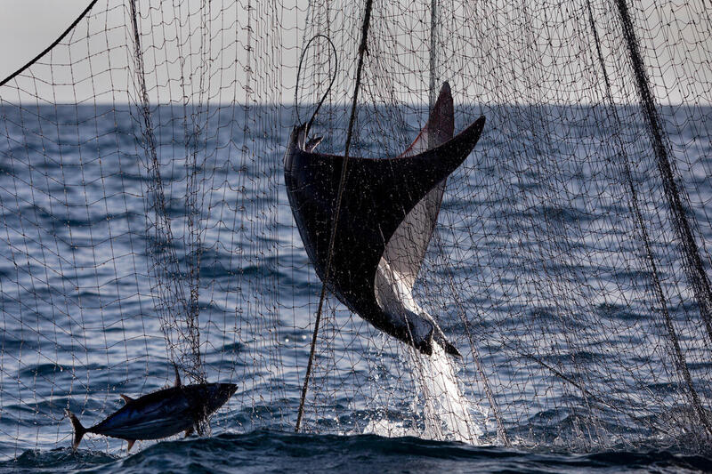
La incorporación de pescadores en la vigilancia y cuidado de los recursos.
Recorridos acuáticos y terrestres para vigilancia y protección.
Instalación de más puntos de revisión.
Sistema Virtual de Denuncia de Pesca Ilegal.
Establecimiento de áreas protegidas.
Prohibición de artes de pesca no sustentables
Publicación de penas por pesca ilegal.
Publicación de licencias de pesca.
Prohibir el traslado de peces entre barcos en el mar, a menos que se haya autorizado previamente y se controle cuidadosamente.
Castigar a cualquier persona involucrada en la pesca ilegal, no declarada y no reglamentada.
Adoptar medidas internacionales
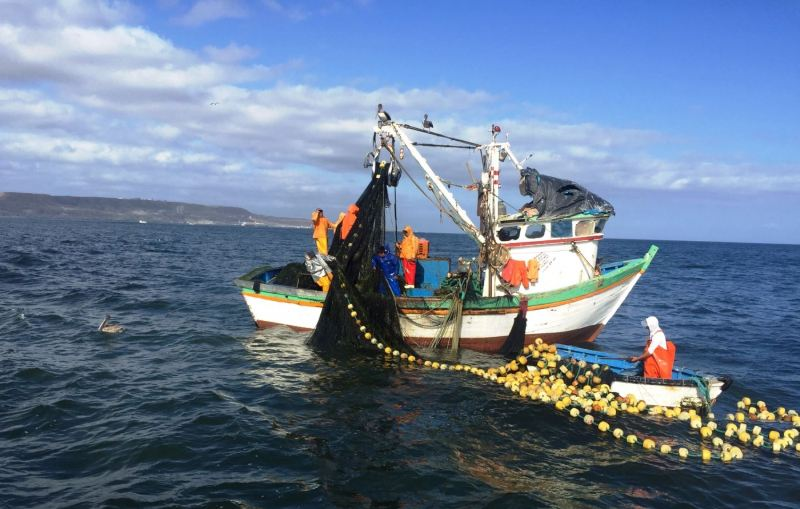
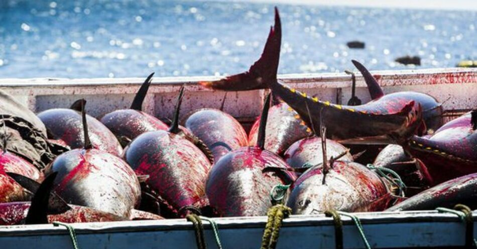
La importancia de esta ODS:
 Esta ODS es muy importante porque el océano representa más del 70% de la superficie de la tierra y se usa para muchas cosas. Pero muchas veces creemos que son completamente sustentables y que duraran para siempre, lo que es un grave error. Nosotros nos alimentamos en gran parte de pescados y de animales extraídos del mar, es algo muy común en todo tipo de comidas. Especialmente la cocina peruana utiliza mucho el pescado o el marisco, basta mencionar que uno de nuestros platos bandera es el ceviche, completamente hecho de pescado. La extinción de muchas especies de la vida marina no solo nos afectaría a nosotros, si no a todo el mundo.
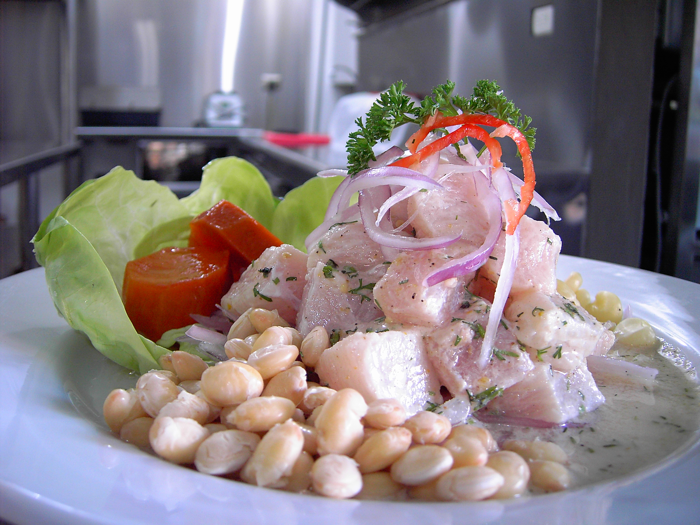
Esta ODS es muy importante porque el océano representa más del 70% de la superficie de la tierra y se usa para muchas cosas. Pero muchas veces creemos que son completamente sustentables y que duraran para siempre, lo que es un grave error. Nosotros nos alimentamos en gran parte de pescados y de animales extraídos del mar, es algo muy común en todo tipo de comidas. Especialmente la cocina peruana utiliza mucho el pescado o el marisco, basta mencionar que uno de nuestros platos bandera es el ceviche, completamente hecho de pescado. La extinción de muchas especies de la vida marina no solo nos afectaría a nosotros, si no a todo el mundo.
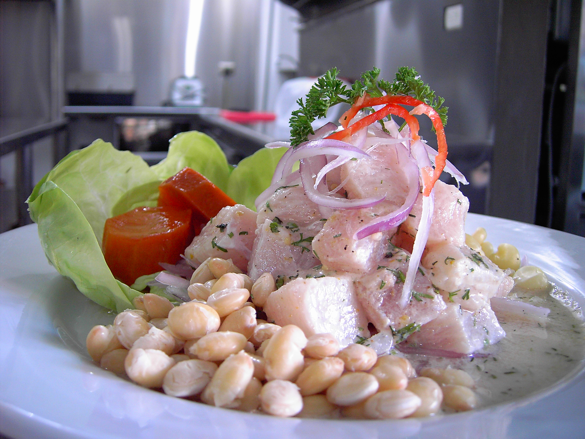
Con respecto a la pesca ilegal, esta debe ser eliminada completamente. Nos deja sin vida marina y también afecta a que podamos comer pescados por mucho tiempo más. Por lo que indirectamente también le hace daño a ellos y a su negocio. Los más afectados serían todos los animales que están en el mar, ellos necesitan tiempo para reproducirse y aumentar su población, y al realizar pesca ilegal causa la extinción de muchas especies. Vimos el ejemplo de los tiburones y las rayas que su población es cada vez menos y eso no se detendrá hasta que este problema se solucione. El consumo de pescado representa el 16.7% del aporte total de la proteína animal”.
El 5 de junio es considerado el día contra la pesca ilegal desde el 2017. Nos recuerda de que a pesar de que el gobierno pueda interferir de una mejor manera contra este problema, cada uno de nosotros también tiene una responsabilidad. Debemos informarnos de donde viene el pescado que comemos, 1 de cada 5 son pescados ilegalmente. Si cada uno de nosotros cambia y dejamos de apoyar a este tipo de pescas, no tardarán en desaparecer, el cambio empieza por cada uno de nosotros. La vida marina y el mundo dependen de todos nosotros.
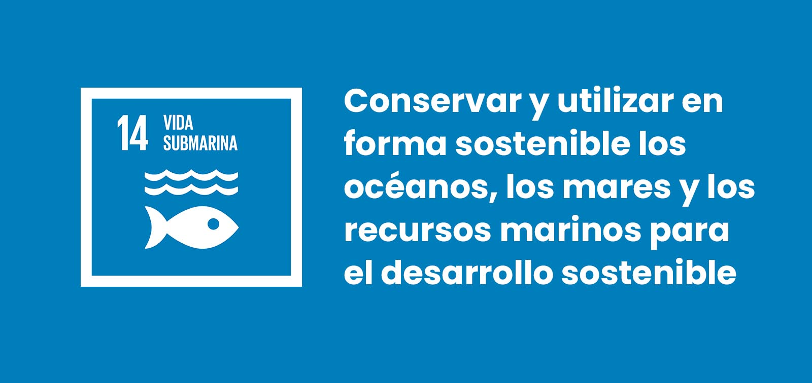
Bibliografía
Fish Costa Rica. (2018). 10 pasos para reducir la pesca ilegal a nivel mundial.
https://es.fishcostarica.org/10-pasos-para-reducir-la-pesca-ilegal-a-trav%C3%A9s-de-la-transparencia-global/
Loaiza, Y. (2021). 3 claves para entender el oscuro mundo de la pesca ilegal. Infobae.
https://www.infobae.com/america/medio-ambiente/2021/10/07/3-claves-para-entender-el-oscuro-mundo-de-la-pesca-ilegal/
Naciones Unidas. (2020). Día Internacional de la lucha contra la pesca ilegal, no declarada y no reglamentada
5 de junio.
https://www.un.org/es/observances/end-illegal-fishing-day
Gobierno de México. (2018). Estrategias de combate contra pesca ilegal.
https://www.gob.mx/agricultura/es/articulos/estrategias-de-combate-contra-pesca-ilegal
Ir al principal